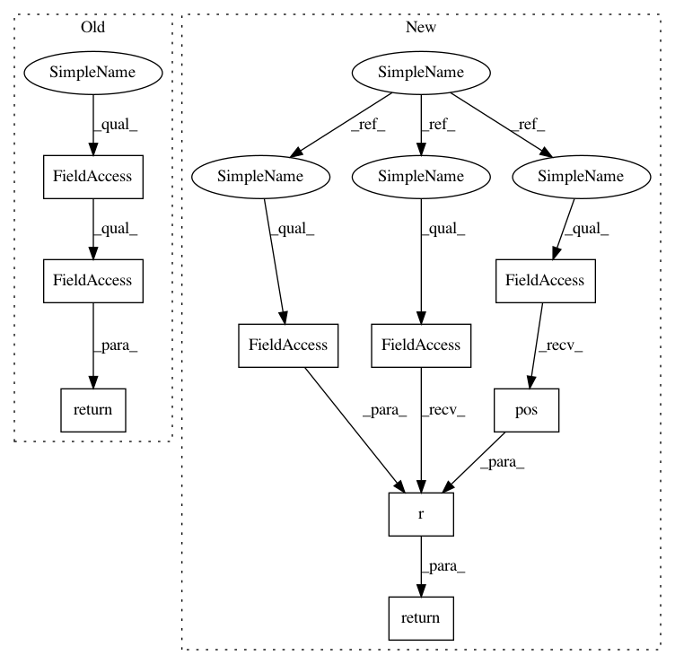

bc22d044fac59b29d4e5f83e00c4be8448a4bc43,acoular/fbeamform.py,BeamformerBase,_get_rm,#BeamformerBase#,335
Before Change
return self.steer_obj.r0
def _get_rm(self):
return self.steer_obj.rm
def _set_c(self, c):
self.steer_obj.c = c
After Change
return self.env.r( self.c, self.grid.pos())
@property_depends_on("digest")
def _get_rm ( self ):
return self.env.r( self.c, self.grid.pos(), self.mpos.mpos)
@property_depends_on("ext_digest")
def _get_result ( self ):
In pattern: SUPERPATTERN
Frequency: 4
Non-data size: 9
Instances
Project Name: acoular/acoular
Commit Name: bc22d044fac59b29d4e5f83e00c4be8448a4bc43
Time: 2018-05-03
Author: gert.herold@tu-berlin.de
File Name: acoular/fbeamform.py
Class Name: BeamformerBase
Method Name: _get_rm
Project Name: acoular/acoular
Commit Name: bc22d044fac59b29d4e5f83e00c4be8448a4bc43
Time: 2018-05-03
Author: gert.herold@tu-berlin.de
File Name: acoular/fbeamform.py
Class Name: PointSpreadFunction
Method Name: _get_rm
Project Name: acoular/acoular
Commit Name: bc22d044fac59b29d4e5f83e00c4be8448a4bc43
Time: 2018-05-03
Author: gert.herold@tu-berlin.de
File Name: acoular/fbeamform.py
Class Name: BeamformerBase
Method Name: _get_r0
Project Name: acoular/acoular
Commit Name: bc22d044fac59b29d4e5f83e00c4be8448a4bc43
Time: 2018-05-03
Author: gert.herold@tu-berlin.de
File Name: acoular/fbeamform.py
Class Name: PointSpreadFunction
Method Name: _get_r0